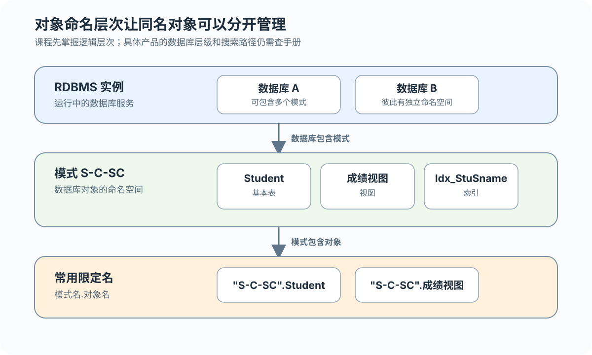
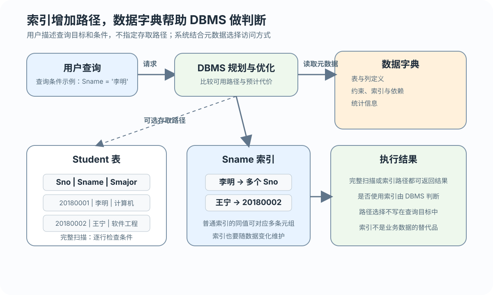

字符
CHAR(n) 适合定长值，VARCHAR(n) 适合长度变化的文本
把关系模式和完整性要求定义为数据库对象
 VER. 2608.2
Built with impress.js
VER. 2608.2
Built with impress.js
SQL 数据定义把关系模式、约束和存取路径定义为 DBMS 管理的对象
不同对象有不同的创建、修改和删除方式
| 对象 | 创建 | 删除 | 修改 |
|---|---|---|---|
| 模式 | CREATE SCHEMA | DROP SCHEMA | 标准无统一修改语句 |
| 基本表 | CREATE TABLE | DROP TABLE | ALTER TABLE |
| 视图 | CREATE VIEW | DROP VIEW | 3.6 专门讲解 |
| 索引（DBMS 扩展） | 产品提供的 CREATE INDEX | 产品提供的 DROP INDEX | 产品提供的 ALTER INDEX 等语句 |
模式提供命名空间，表、视图和索引可以在其中定义

01CREATE SCHEMA "S-C-SC" AUTHORIZATION WANG;:::
组织数据库对象的命名空间
标识模式的授权者或所有者
执行 CREATE SCHEMA 的用户需要 DBA 权限，或已经获得 CREATE SCHEMA 权限
DROP SCHEMA 需要明确 RESTRICT 或 CASCADE
表定义同时描述列、类型和完整性约束
01
02
03
04
05
06
07CREATE TABLE "S-C-SC".Student (
Sno CHAR(8) PRIMARY KEY,
Sname VARCHAR(20),
Ssex CHAR(6),
Sbirthdate DATE,
Smajor VARCHAR(40)
);建表同时定义字段、数据类型和约束。Sno 是学生的唯一标识；Sname 允许重复，除非业务规则另行要求唯一
外码不一定跨表，也可以引用本表的主码
01
02
03
04
05
06
07CREATE TABLE "S-C-SC".Course (
Cno CHAR(5) PRIMARY KEY,
Cname VARCHAR(40) NOT NULL,
Ccredit SMALLINT,
Cpno CHAR(5),
FOREIGN KEY (Cpno) REFERENCES "S-C-SC".Course(Cno)
);Cpno 为 NULL 表示没有先修课；非空时必须对应 Course 中已有的 Cno
本例只记录一门直接先修课，多门先修课需要不同的关系设计
SC 的复合主码涉及两列，两个外码分别引用其他表
01
02
03
04
05CREATE TABLE SC (
Sno CHAR(8), Cno CHAR(5), Grade SMALLINT,
PRIMARY KEY (Sno, Cno),
FOREIGN KEY (Sno) REFERENCES Student(Sno),
FOREIGN KEY (Cno) REFERENCES Course(Cno));表级约束：PRIMARY KEY (Sno, Cno) 保证组合唯一、两列非空；外码：SC.Sno→Student.Sno、SC.Cno→Course.Cno；DBMS 将约束存入数据字典并在操作时检查；同一学生同一课程只登记一次
类型选择要同时考虑取值范围和后续运算
CHAR(n) 适合定长值，VARCHAR(n) 适合长度变化的文本
SMALLINT、INT、BIGINT 和 DECIMAL(p,s) 适合不同范围与精度
DATE、TIME 和 TIMESTAMP 支持时间相关比较和运算
业务域在 SQL 中落为“数据类型 + 长度/精度 + 必要的完整性约束”；类型名称、范围和扩展可能随 DBMS 与版本变化
成绩需要计算平均值，优先选择数值类型而不是普通字符串
类型不是字段名称的翻译，而是对值域和运算的约束
| 属性 | 主要需求 | 类型判断 |
|---|---|---|
| Sname | 长度变化的姓名文本 | VARCHAR(n)，n 按业务最大长度选择 |
| Grade | 0—100 百分制、比较和求平均 | SMALLINT 加必要的范围约束 |
| Sbirthdate | 日期比较 | DATE |
| OrderAmount | 精确金额运算和两位小数 | DECIMAL(10,2) 或 NUMERIC(10,2) |
表结构变化必须结合现有数据和依赖对象判断
01
02
03
04ALTER TABLE "S-C-SC".Student ADD Semail VARCHAR(30);
ALTER TABLE "S-C-SC".Course ADD CONSTRAINT UQ_Course_Cname UNIQUE (Cname);
ALTER TABLE "S-C-SC".Student DROP COLUMN Semail RESTRICT;
ALTER TABLE "S-C-SC".Student ALTER COLUMN Sbirthdate TYPE CHAR(10);增加列或新的完整性约束
删除列或约束时要检查依赖，并选择 RESTRICT 或 CASCADE
修改列名、数据类型或其他定义；已有数据可能无法转换
新定义必须与现有数据、视图和应用兼容；已有重复数据时新增 UNIQUE 可能失败
RESTRICT 与 CASCADE 的含义取决于正在删除或修改的对象
| 对象操作 | RESTRICT | CASCADE |
|---|---|---|
| DROP SCHEMA | 模式中已有对象时拒绝 | 连同模式内对象一起删除 |
| DROP TABLE | 被 SC、视图等依赖时拒绝 | 可能连带删除依赖对象 |
| DROP COLUMN / CONSTRAINT | 被其他定义引用时拒绝 | 可能移除相关依赖定义 |
CASCADE 不是更方便的默认选项；具体依赖范围和处理策略仍需核对 DBMS 产品手册
删除前要先确认数据、约束、视图和应用依赖
01
02
03
04
05-- 二选一，不要连续执行
DROP TABLE "S-C-SC".Student RESTRICT;
-- SC.Sno 仍引用 Student.Sno，操作被拒绝
DROP TABLE "S-C-SC".Student CASCADE;
-- 可能连带删除 SC 或其他依赖对象，具体以产品手册为准DROP TABLE 删除表定义及其数据；DELETE FROM 只删除数据行并保留表结构
索引是常见 RDBMS 扩展：查询可能受益，但会增加空间与更新成本

01
02CREATE INDEX Idx_StuSname
ON "S-C-SC".Student(Sname);:::
用户只说明查询目标和条件；RDBMS 根据条件、统计信息和可用路径决定是否使用索引
建立索引要看查询频率、选择性和更新代价；选择性高表示命中元组少
高频且高选择性的列通常更可能受益于索引
低选择性或小表的收益可能有限；频繁更新会增加维护成本
DBA 或表属主决定建立、修改和删除索引；普通索引不改变唯一性约束
数据字典是 DBMS 内部系统目录，记录对象、依赖和运行所需的元数据
| 数据字典中的信息 | 用途 | 示例 |
|---|---|---|
| 对象定义 | 识别表、列、视图和索引 | Student 的列和类型 |
| 约束与权限 | 检查合法操作 | 主码、外码和授权 |
| 统计信息 | 支持查询处理和优化 | 表规模与索引信息 |
DDL 更新 DBMS 内部数据字典；后续约束检查、查询处理和优化都读取这些定义信息，数据字典不是普通业务表
数据定义把关系模型、约束和存取路径落成 DBMS 可以管理的对象
模式提供命名空间；表定义列、类型、列级约束和表级约束
类型实现业务域；ALTER 和 DROP 必须考虑现有数据、依赖与 RESTRICT / CASCADE
索引是常见 RDBMS 扩展，改变存取路径并增加维护成本；数据字典记录 DBMS 所需定义
写 DDL 前先确认对象关系、业务语义、依赖范围和目标 DBMS 的语法边界
"S-C-SC" 中，模式名、表名和 AUTHORIZATION 各表示什么？从 SC 指出复合主码和两个外码，并解释 PRIMARY KEY (Sno,Cno) 的组合唯一与非空语义？Grade、Sname、Sbirthdate 和 OrderAmount 应依据哪些值域、长度/精度及后续运算选型？DROP TABLE Student 的 RESTRICT、CASCADE 与 DELETE FROM Student 有何区别？CREATE INDEX 是否属于 SQL 标准统一语句？普通索引如何处理重复姓名，如何权衡高/低选择性及频繁更新列的收益和代价？数据字典记录哪些对象、约束、权限、依赖和统计信息，又如何支撑约束检查、查询处理与优化？